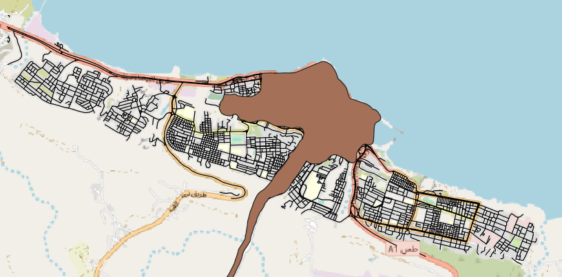
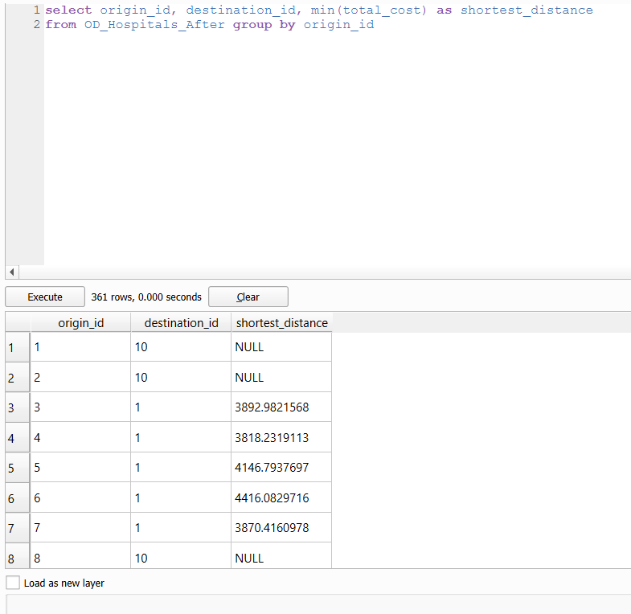
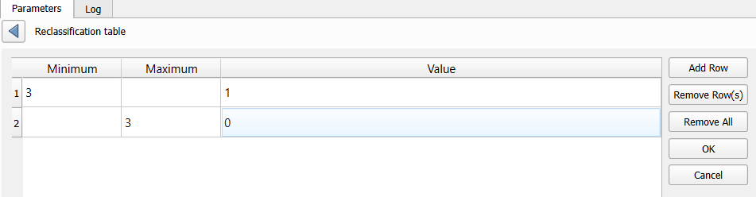

GIS Analysis and Functions
Dataset Used
Derna_city_250m hexagon provided.
Roads, buildings and places of interest data (labelled as POIS) from OpenStreetMap (OSM) data sets, downloaded from Libya which is located in the Geofabrik download server
Health facilities, elevation model and flood impact assessment downloaded from Libya Floods which is located in the Humanitarian Data Exchange
Geo Eye satellite images for Libya, downloaded from Libya Floods which is located in the Maxar Open Data Program.
Accessibility Analysis
Extract motor vehicle road network.
Create 3 hexagon layers: Hexagon base, Accessibility for Before Flood, and Accessibility for After Flood.
Generate hexagon centroids to calculate the distances between hexagon centroids and hospitals with the Origin-Destination Matrix Tool.
Extracting shortest distance pairs using SQL in DB Manager.
Map accessibility values of hospitals.
Generate choropleth maps for both Before and After hexagons.
Data Preparation and Cleaning
Flood Impact Assessment
To add the Flood Extent (PHR_20230913_FloodExtent_Derna.shp),
- Click Layer → Add Layer → Add Vector Layer….
- Under Data Source Manager | Vector dialog,
- Click “…” and browse “PHR_20230913_FloodExtent_Derna.shp”
- Click Add.
Health Facilities
To add the Libya Health Facilities (hotosm_lby_health_facilities_points_shp_point.shp),
- Click Layer → Add Layer → Add Vector Layer….
- Under Data Source Manager | Vector dialog,
- Click “…” and browse “hotosm_lby_health_facilities_points_shp_point.shp”
- Click Add.
- We will include the hexagon map and extract the hospitals and roads within the Derna 250m hexagon.
- Under Data Source Manager | Vector dialog,
- Click “…” and browse “Derna_city_250m_hexagon.shp”
- Click Add.
- To save as Geopackage, right-click “Derna_city_250m_hexagon.shp” layer → Export → Save Features As.
- Under Save Vector Layer as dialog,
Format: GeoPackage
File name: Click the “…” button and select “Derna” GeoPackage in the “GeoPackage” folder.
Layer: derna_city_250m_hexagon
CRS: EPSG: 32634 - WGS 84 / UTM zone 34N
Click Ok.
- Click Vector → Geoprocessing Tools → Clip.
- Under Clip dialog,
Input layer: hotosm_lby_health_facilities_points_shp_point
Overlay layer: derna_city_250m_hexagon
Click Run.
- To save as Geopackage, right-click “hotosm_lby_health_facilities_points_shp_point.shp” layer → Export → Save Features As.
- Under Save Vector Layer as dialog,
- Format: GeoPackage
- File name: Click the “…” button to create “Derna” GeoPackage in the “GeoPackage” folder.
- Layer: Derna_Hospitals_Before
- CRS: EPSG: 32634 - WGS 84 / UTM zone 34N
- Click Ok.
- Open OpenStreetMap by expanding XYZ Tiles.
Looking at the Health Facilities data in the OpenStreetMap (OSM), there are certain hospitals that are not registered. We will add missing information in the hospital data.

- In the Layers tab, right-click “Derna_Hospitals_Before” → Toggle Editing.
- Click Add Point Feature and add a point in the red circled area.
- Under the Factor Attributes dialog,
- Amenity: hospital
- Click Ok.
- To clean the data, right-click “Derna_Hospitals_Before” layer → Open Attribute Table.
- Click Toggle Editing Mode → Delete Field.
- Delete source, building, operator_t, healthcare, addr_full, addr_city, healthca_1, name_ar, name, capacity_p.
- Click Toggle Editing Mode → Save. Close the Attribute Table screen.
For the analysis for after flood, we have to remove the affected hospitals.
- Duplicate “Derna_Hospitals_Before” and save as GeoPackage.
- Click Vector → Geoprocessing Tools → Difference.
- Input layer: Derna_Hospitals_Before copy
- Overlay layer: PHR_20230913_FloodExtent_Derna
- Click Run.
- Under Save Vector Layer as dialog,
- Format: GeoPackage
- File name: Click the “…” button to select “Derna” GeoPackage in the “GeoPackage” folder.
- Layer: Derna_Hospitals_After
- CRS: EPSG: 32634 - WGS 84 / UTM zone 34N
- Click Ok.
Road Network
To add the Road Network data (gis_osm_roads_free_1.shp).
- Repeat steps 1 to 4 from Health Facilities.
- Step 4
- Layer: Derna_Roads (Before)
- Step 4
- Click Layer → Add Layer → Add Vector Layer….
- Click Vector → Geoprocessing Tools → Clip.
- Under Clip dialog,
- Input layer: gis_osm_roads_free_1
- Overlay layer: derna_city_250m_hexagon
- Click Run.
However, there are missing roads that are not captured in OSM here.We have to manually add these roads to have a more accurate representation of accuracy analysis.
- In the Layers tab, right-click “Derna_Roads_Before.shp” → Toggle Editing.
- Click Add Line Feature and add missing lines to connect the roads.
- Under the Factor Attributes dialog,
- fclass: residential
- Click Ok.
We will extract motor vehicle road network (motorway, motorway_link, primary, primary_link, secondary, secondary_link, tertiary, tertiary_link, residential, trunk and trunk_link) from Derna_Roads_Before layer.
- In the Layers tab, right-click “Derna_Roads_Before” → Open Attribute Table.
- Click Select features using an expresssion.
- Under Select by Expression dialog,
Input below as expression: “fclass” = ‘footway’ OR “fclass” = ‘living_steet’ OR “fclass” = ‘path’ OR “fclass” = ‘service’ OR “fclass” = ‘track’ OR “fclass” = ‘unclassified’
- Click Select Features → Close.
- Click Toggle Editing → Delete selected features → Confirm Delete Feature(s)
- To clean the data, click Delete Field.
- Delete name, ref, layer.
- Click Toggle Editing Mode → Save. Close the Attribute Table screen.
For the analysis for after flood, we have to remove the affected roads.
- Duplicate “Derna_Roads_Before” and save as GeoPackage.
- Click Vector → Geoprocessing Tools → Difference.
- Input layer: Derna_Roads_Before copy
- Overlay layer: PHR_20230913_FloodExtent_Derna
- Click Run.
- Under Save Vector Layer as dialog,
- Format: GeoPackage
- File name: Click the “…” button to select “Derna” GeoPackage in the “GeoPackage” folder.
- Layer: Derna_Roads_After
- CRS: EPSG: 32634 - WGS 84 / UTM zone 34N
- Click Ok.

Derna_city_250m_hexagon
We will setup 2 extra duplicated hexagons for the before and after chropleth maps for the accessibility analysis.
- Duplicate “derna_city_250m_hexagon” in Layer twice, and rename each of the layer accordingly.
- Accesibility to Hospitals (Before)
- Accesibility to Hospitals (After)
- Compute hexagon centroids by select Vector -> Geometry Tools -> Centroids.
- Under Centroids dialog,
- Input layer: derna_city_250m_hexagon
- Click Run and Close.
- To save as Geopackage, right-click “Centroids.shp” layer → Export → Save Features As.
- Under Save Vector Layer as dialog,
- Format: GeoPackage
- File name: Click the “…” button and select “Derna” GeoPackage in the “GeoPackage” folder.
- Layer: hex_centroid
- CRS: EPSG: 32634 - WGS 84 / UTM zone 34N
- Click Ok.
Networking Accessibility Analysis
We will do the first analysis for before flood.
- Using the QNEAT3 plugin, select Processing → Toolbox.
- At the Search pane, type “OD Matrix”.
- Click OD Matrix Layers as Table (m:n).
- Under OD Matrix Layers as Table (m:n) dialog,
- Network Layer: Derna_Roads_Before
- From-Point Layer: hex_centroid
- Unique Point ID Field: fid
- To-Point Layer: Derna_Hospitals_Before
- Unique Point ID Field: fid
- Optimization Criterion: Shortest Path (distance optimization)
- Entry Cost calculation method: Ellipsoidal
- Direction field: oneway
- Value for forward direction: F
- Value for backward direction: T
- Value for both direction: B
- Topology tolerance: 0.5
- Click Run and Close.
- To save as Geopackage, right-click “Output OD Matrix” layer → Export → Save Features As.
- Under Save Vector Layer as dialog,
- Format: GeoPackage
- File name: Click the “…” button and select “Derna” GeoPackage in the “GeoPackage” folder.
- Layer: OD_Hospitals_Before
- CRS: EPSG: 32634 - WGS 84 / UTM zone 34N
- Click Ok.
We will extract the SQL to select destination poins with the shortest distance.
- Select Database → DB Manager….
- Undet the DB Manager dialog, expand Virtual Layers, expand Project layers and click SQL Window.
- Input this expression: select origin_id, destination_id, min(total_cost) as shortest_distance from OD_Hospitals_Before group by origin_id
- Click Execute → Check Load as new layer → Load → Close the DB Manager.
- To save as Geopackage, right-click “QueryLayer” layer → Export → Save Features As.
- Under Save Vector Layer as dialog,
- Format: GeoPackage
- File name: Click the “…” button and select “Derna” GeoPackage in the “GeoPackage” folder.
- Layer: acc_hospitals_before
- CRS: EPSG: 32634 - WGS 84 / UTM zone 34N
- Click Ok.
- To join “acc_hospitals_before” and “Accesibility to Hospitals (Before)”, right-click on “Accesibility to Hospitals (Before)” layer, select Properties.
- Click Joins → +.
- Under Add Vector Join dialog,
- Join layer: acc_hospitals_before
- Join field: origin_id
- Target field: fid
- Click Ok.
- Click Symbology, and under the page,
- Select Graduated.
- Value: acc_hospitals_before_shortest_distance
- Color ramp: Blues → Invert Color Ramp.
- Classes: 5
- Click Classify, Apply and Ok.
We will do the same analysis for after flood.
- Repeat all of the above steps for Accesibility to Hospitals (After).
- Step 4.
- To-Point Layer: Derna_Hospitals_After
- Step 6.
- Layer: OD_Hospitals_After
- Step 9.
- Expression: select origin_id, destination_id, min(total_cost) as shortest_distance from OD_Hospitals_After group by origin_id.
- Step 4.

4. Step 12.
1. Layer: acc_hospitals_after
5. Step 15.
1. Join layer: acc_hospitals_after
6. Step 16.
1. Color ramp: Greens → Invert Color Ramp.Suitability Analysis
Generate proximity maps for each by converting vector data to raster data.
Generate ranking models for each feature.
Carry out an AHP Analysis to obtain the importance of each feature.
Combine different ranking maps into one output, using the weightages from the AHP Analysis, and multiplying them to their respective features using the Raster Calculator.
From the resulting output, we classify the suitability factor by using Reclassification by Table.
We identified 3 as the minimum level for an area to be considered “Suitable”.
Data Preparation and Cleaning
Buildings
To add the Buildings data (gis_osm_buildings_a_free_1.shp).
Click Layer → Add Layer → Add Vector Layer….
Under Data Source Manager | Vector dialog,
Click “…” and browse “gis_osm_buildings_a_free_1.shp”
Click Add.
Click Vector → Geoprocessing Tools → Clip.
Under Clip dialog,
Input layer: gis_osm_buildings_a_free_1
Overlay layer: derna_city_250m_hexagon
Click Run.
To save as Geopackage, right-click “gis_osm_buildings_a_free_1.shp” layer → Export → Save Features As.
Under Save Vector Layer as dialog,
Format: GeoPackage
File name: Click the “…” button to select “Derna” GeoPackage in the “GeoPackage” folder.
Layer: Derna_Buildings_Before
CRS: EPSG: 32634 - WGS 84 / UTM zone 34N
Click Ok.
To clean the data, right-click “Derna_Buildings_Before” layer → Open Attribute Table.
Click Toggle Editing Mode → Delete Field.
Delete all fields except for fid and osm_id.
Click Toggle Editing Mode → Save. Close the Attribute Table screen.
Flood Impact Assessment
To add the Elevation Model (hdr.adf) in Libya - Elevation Model,
- Click Layer → Add Layer → Add Raster Layer….
- Under Data Source Manager | Raster dialog,
- Click “…” and browse “hdr.adf”
- Click Add.
- To save as Geopackage, right-click “lyb_strm_250m.shp” layer → Export → Save Features As.
- Under Save Vector Layer as dialog,
- Format: GeoPackage
- File name: Click the “…” button to select “Derna” GeoPackage in the “GeoPackage” folder.
- Layer: DEM
- CRS: EPSG: 32634 - WGS 84 / UTM zone 34N
- Click Ok.
Next, we will extract out the Derna area only.
- Select Raster → Extraction → Clip Raster by Mask Layer.
- Under Clip Raster by Mask Layer dialog,
- Input layer: DEM
- Mask layer: derna_city_250m_hexagon
- Click Run and Close.
- Replace the “DEM” in the ‘Derna’ GeoPackage with the “Clipped” layer.

Multicriteria Decision Analysis for Derna’s Land Suitability
Raster and Proximity Layers
We will create Raster and Proximity layers to find a suitable area for evacuation centres.
Buildings
- Select Raster → Conversion → Rasterize (Vector to Raster).
- Under Rasterize (Vector to Raster) dialog,
- Input layer: Derna_Buildings_Before
- Output raster size units: Georeferenced units
- Width/Horizontal resolution: 5
- Height/Vertical resolution: 5
- Output extend: Calculate from Layer → DEM
- Click Run and Close.
- Right click Rasterized, select Export → Save As.
- Under Save Raster Layer as dialog,
- Format: GeoTIFF
- File name: Click the “…” button and add “raster_buildings” in the “GeoTiff” folder.
- CRS: EPSG: 32634 - WGS 84 / UTM zone 34N
- Click Ok and Close.
We will create the proximity layer next.
- Select Raster → Analysis → Proximity (Raster Distance).
- Under Proximity (Raster Distance) dialog,
- Input layer: raster_buildings
- Distance units: Georeferenced coordinates
- Output data type: Float32 (This should be by default)
- Click Run and Close.
- Right click Proximity map, select Export → Save As.
- Under Save Raster Layer as dialog,
- Format: GeoTIFF
- File name: Click the “…” button and add “proximity_buildings” in the “GeoTiff” folder.
- CRS: EPSG: 32634 - WGS 84 / UTM zone 34N
- Click Ok and Close.
- Remove Proximity map and Rasterized layers.
Roads
Repeat the same steps as Buildings. Below are the reference images for both raster_roads and proximity_roads.

Hospitals
Repeat the same steps as Buildings, however, we will be using “Derna_Hospitals_After” layer instead because of the flood extent. Below are the reference images for both raster_roads and proximity_roads.
Slope
We will compute the slope as another important factor to find suitable evacuation centres.
- Select Raster → Analysis → Slope.
- Under Slope dialog,
- Input layer: DEM
- Click Run.
- Right click temporary Slope layer, select Export → Save As.
- Under Save Raster Layer as dialog,
- Format: GeoTIFF
- File name: Click the “…” button and add “Slope” in the “GeoTiff” folder.
- CRS: EPSG: 32634 - WGS 84 / UTM zone 34N
- Click Ok and Close.
- Remove the temporary Slope layer.
Ranking Model using AHP Analysis
These are the criteria that were set to determine the suitability of building the university.
Accessibility factor (Roads): <=100m = 5, 100-200m = 4, 200-300m = 3, 300-500m = 2, >500m = 1.
Healthcare factor and Urban Settlement factor (Hospitals): <=100m = 5, 100-300m = 4, 300-500m = 3, 500-750m = 2, >750m = 1.
Economic factor (Slope): >20o slope = 5, 18o-20o = 4, 15o-28o = 3, 12o-15o = 2, <=12o = 1.
Accessibility factor
Select Processing → Toolbox.
Search Reclassify by Table in the toolbox’s search bar and double click it.
Under Reclassify by Table dialog,
Raster layer: proximity_roads
Click “…” at the end of Reclassification table
- Click Add Row and input values like the image shown below.
- Click Ok.
- Range boundaries: min < value <= max
- Output data type: Float 32 (This should be by default)
- Click Run.
- Right click Reclassified raster layer, select Export → Save As.
- Under Save Raster Layer as dialog,
- Format: GeoTIFF
- File name: Click the “…” button and add “rank_accessibility” in the “GeoTiff” folder.
- CRS: EPSG: 32634 - WGS 84 / UTM zone 34N
- Click Ok and Close.
- Remove the Reclassified raster layer.
Healthcare factor and Urban Settlement factor
Repeat the same steps as Accessibility factor. Below are the reference images for rank_healthcare and rank_urban-settlement.
Economic factor
Repeat the same steps as Accessibility factor. Below are the reference images for rank_economic.

AHP Analysis
We will compute the rank model using the AHP comparison matrix, and we have prioritized our factors as shown below.
Below is the AHP consistency score.
Select Processing → Toolbox.
Search Raster calculator in the toolbox’s search bar and double click it under “Raster analysis”.
Under Raster calculator dialog,
- Expression: (“rank_accessibility@1” * 0.278) + (“rank_healthcare@1” * 0.177) + (“rank_economic@1” * 0.388) + (“rank_urban-settlement@1” * 0.158)
- Click “…” and select “DEM”
- Click Ok.
- Output CRS: EPSG: 32634 - WGS 84 / UTM zone 34N
- Click Run and Close.
- Right click “Output” layer, select Export → Save As.
- Under Save Raster Layer as dialog,
- Format: GeoTIFF
- File name: Click the “…” button and add “factor_suitability” in the “GeoTiff” folder.
- CRS: EPSG: 32634 - WGS 84 / UTM zone 34N
- Click Ok and Close.
- Remove the “Output” layer.
The factor layer should look like this as the image shown below.
Select Processing à Toolbox.
Search Reclassify by Table in the toolbox’s search bar and double click it.
Under Reclassify by Table dialog,
- Raster layer: factor_suitability
- Click “…” at the end of Reclassification table
- Click Add Row and input values like the image shown below.

- Click OK.
- Range boundaries: min <= value < max
- Ouput data type: Float 32 (This should be by default)
- Click Run.
- Right click Reclassified raster layer, select Export à Save As.
- Under Save Raster Layer as dialog,
- Format: GeoTIFF
- File name: Click the “…” button and add “MCDA_model” in the “GeoTiff” folder.
- CRS: EPSG: 32634 - WGS 84 / UTM zone 34N
- Click Ok.
- Remove the Reclassified raster layer.
We will set the MCDA Raster map into a Vector to remove the affected flood area.
- Select Raster à Conversion à Polygonize (Raster to Vector).
- Under Polygonize (Raster to Vector) dialog,
- Input layer: MCDA_model
- Name of the field to create: DN
- Click Run.
- Click Vector → Geoprocessing Tools → Clip.
- Under Clip dialog,
Input layer: Vectorized
Overlay layer: PHR_20230913_FloodExtent_Derna
Click Run.
- To save as Geopackage, right-click “Clipped” layer → Export → Save Features As.
- Under Save Vector Layer as dialog,
Format: GeoPackage
File name: Click the “…” button and select “Derna” GeoPackage in the “GeoPackage” folder.
Layer: MCDA_Model_After
CRS: EPSG: 32634 - WGS 84 / UTM zone 34N
Click Ok.
- Adjust the layer properties until it looks like the image below.